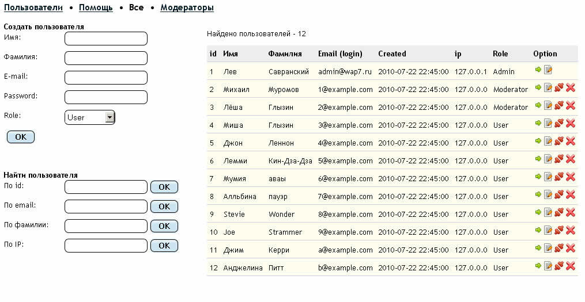

Пользователи
Информация
- Здесь можно Создать, искать, редактировать пользователей.
- Два пользователя - Администратор и Anonymous Vulgaris (автор анонимных комментариев) создаются при установке системы.
- В текущей версии нельзя создать более чем одного Администратора из интерфейса.
- Можно редактировать пользователей ролей ниже залогиненного юзера. То есть Админ може создавать и разжаловать модераторов и простых юзеров, а модератор может работать только с простыми юзерами
- У каждого юзера есть опция Kick from site. Это может быть удобно если вы разжаловали модератора и хотите, чтоб он поскорее узнал об этом ))
